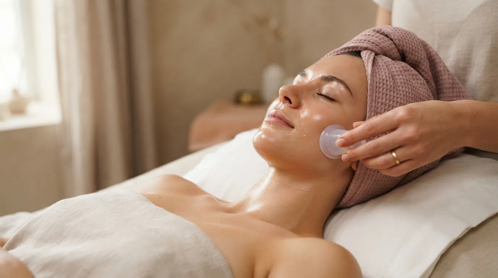

Masáž obličeje · Praha 4
Vakuová (baňková) masáž obličeje Praha
Jemné podtlakové baňky, které pleť nadzvedávají místo toho, aby na ni tlačily. Tonizují svaly, zvyšují pružnost pleti a zvýrazňují kontury obličeje.
Co je vakuová masáž obličeje
Vakuová, neboli baňková masáž obličeje pracuje s malými silikonovými baňkami, které vytvoří mírný podtlak a pleť lehce nasají. Zatímco klasická masáž na tkáň tlačí, baňka ji nadzvedává - uvolní tak vrstvy pod pokožkou a rozproudí krev i lymfu.
Na obličeji se baňkami pohybuje plynule a nikdy se nenechávají stát na místě, takže nezanechávají modřiny jako baňkování na zádech. Masáž se zaměřuje na tonizaci a posílení svalů, pružnost pleti a čistší linie obličeje.
Jak vakuová masáž probíhá
- Očištění a olej Odlíčím pleť a nanesu olej, aby baňky po pleti hladce klouzaly.
- Zahřátí rukama Krátkou ruční masáží pleť prohřeji a připravím na práci s baňkami.
- Práce s baňkami Malými baňkami vedu plynulé tahy podél čelisti, lícních kostí a čela. Sílu podtlaku přizpůsobím vaší pleti.
- Zklidnění Závěrečné ruční hmaty pleť zklidní a vyrovnají prokrvení.
Účinky vakuové masáže
- tonizace a posílení obličejových svalů
- pružnější a pevnější pleť
- zvýrazněné kontury obličeje
- lepší prokrvení a odtok lymfy
- méně výrazné otoky
- svěží, rozjasněný vzhled pleti
Pro koho je vhodná
Vakuová masáž obličeje se hodí, pokud vám pleť ztrácí pružnost, ovál povoluje nebo se ráno budíte s oteklou tváří. Je příjemnou volbou i pro ty, komu je ruční masáž obličeje příliš intenzivní - podtlak pracuje jemně a bez tlaku na kost.
Kdy masáž neprovádíme
- rozšířené žilky (kuperóza) nebo velmi tenká pleť
- akutní akné, opary nebo záněty na pleti
- čerstvě aplikovaná výplň nebo botox (počkejte 2–3 týdny)
- čerstvě po chemickém peelingu nebo laseru
- horečka a akutní onemocnění
Nejste si jistí? Zavolejte mi před rezervací na +420 721 761 411 a probereme to.
Cena vakuové masáže obličeje
Časté dotazy
Zůstanou mi po masáži na obličeji modřiny?
Ne. Na obličeji se baňkami stále pohybuje a podtlak je slabý, takže stopy jako po baňkování zad nevznikají. Pleť může být krátce po masáži mírně zarudlá.
Bolí vakuová masáž?
Nebolí. Cítíte jemné nasávání a teplo. Sílu podtlaku nastavuji podle vaší pleti a během masáže ji můžeme kdykoli upravit.
Mohu si po masáži hned nalíčit?
Doporučuji dát pleti alespoň pár hodin klidu. Na masáž je proto ideální přijít bez make-upu, nebo si ho ve studiu odlíčíte.
Jak často masáž opakovat?
Pro viditelnou změnu tonusu se osvědčuje série několika masáží s odstupem jednoho týdne. Konkrétní plán probereme podle vaší pleti.
Jak se liší od masáže Gua Sha?
Gua Sha pracuje kamenem, který po pleti klouže a tlačí. Baňka naopak pleť nadzvedává. Obě metody podporují odtok lymfy a kontury, liší se pocitem i způsobem práce.
Objednejte se na vakuovou masáž obličeje
Studio najdete v Praze 4 - Nusle, kousek od Pankráce a Vyšehradu. Online rezervace zabere minutu.